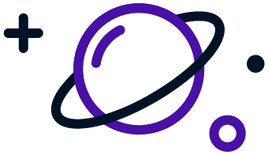

Orchard
AI career readiness
Leading 0-to-1 design for an AI mentor that helps high schoolers find clarity and assurance in an uncertain future.
20 years of 0-to-1 web apps — and lately, AI interfaces that know when to hand the wheel back to a human.


Try next: "add Frederick's friends to the Personas folder" · "build the Orchard case study in 4a" · "make 4a mobile"
20 years of 0-to-1 web apps — and lately, AI interfaces that know when to hand the wheel back to a human.
Try next: "let visitors drag Frederick’s friends around" · "use the line-to-color wipe on the Orchard screens too" · "make 3a mobile"
Try next: "2a hero with 2b’s project posters" · "make 2a mobile" · "build an Orchard case-study page in this style"
Twenty years building 0-to-1 web apps and AI interfaces — from design systems to vectorized RAG agents and human-in-the-loop workflows.
Leading 0-to-1 design for an AI mentor that helps high schoolers find clarity and assurance in an uncertain future.
Scaling one product across four audiences: the independent learner, the enterprise team, the hiring employer, and internal placement staff.
View the screens →A builder at heart — always messing around with something new. Lately: agents that critique their own work.

A builder–critic agent loop: prompts are human-reviewed, generated, then scored by a vision model. Shipped on pass, looped back with notes on fail.
A game-mastering agent on vectorized rulesets, with human-in-the-loop workflows to minimize hallucinations and co-author a cohesive narrative.
Twenty years taking products from prototype to production. Sole designer as Frederick grew from $200k to $10M ARR — then acquired by MINDBODY. Now: AI interfaces, RAG agents, and humans in the loop.
I’m a product & design leader who’s spent 20 years building 0-to-1 web apps — and lately, AI that knows when to ask a human.
Try next: "push 1b further with scroll-driven motion" · "1a type with 1c’s stickers" · "build out a case-study page in 1a"